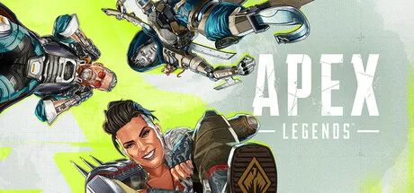
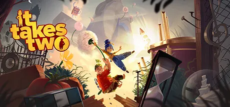
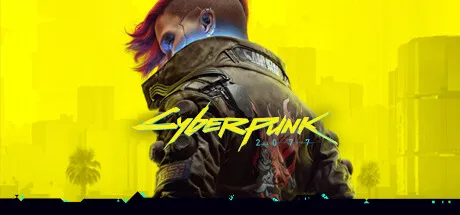
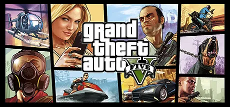
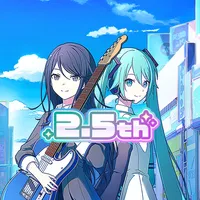
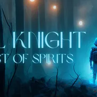
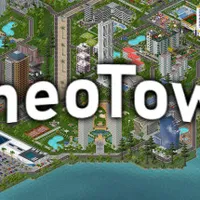
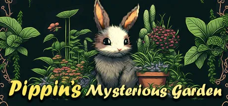
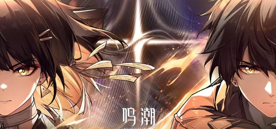

全成就达成 · 钻石段位 · 多位英雄双锤骷髅海
全成就达成 · 全剧情流程通关 · 沉浸式西部世界体验

双人成行 / 双影奇境 / 逃出生天 · 全成就达成 · 全流程通关

全流程通关 · 夜之城探索 · 多结局体验

GTA 3 / 罪恶都市 / 圣安地列斯 / 4 / 5 · 全系列流程通关 · 开放世界探索
看门狗 1 / 看门狗 2 · 全流程通关 · 黑客玩法体验
2 代三部曲 / 3 / 黑旗 / 大革命 · 全流程通关 · 历史背景探索
战地风云 5：100+ 小时 · 黑暗之魂 3：50+ 小时 · 瓦罗兰特：50+ 小时
耻辱系列：50+ 小时（全流程通关）· 鬼泣 5：15+ 小时
THE FINALS：15+ 小时 · 杀手：暗杀世界：50+ 小时（全流程通关）
风之旅人：10+ 小时 · 传送门 2：15+ 小时（全流程通关）
逃生：5+ 小时 · 城市：天际线：30+ 小时 · 泰坦陨落 2：20+ 小时（全流程通关）
20世纪复古神秘学策略RPG · 英配全语音
日本音乐节奏手游 · 8支少女乐队企划

初音未来×节奏游戏 · VOCALOID曲目收录

像素风 Roguelike 射击 · 随机地牢探索

城市建造与模拟经营 · 像素风规划

HoYoverse 宇宙幻想RPG · 银河冒险谭

Kuro Games 开放世界动作RPG